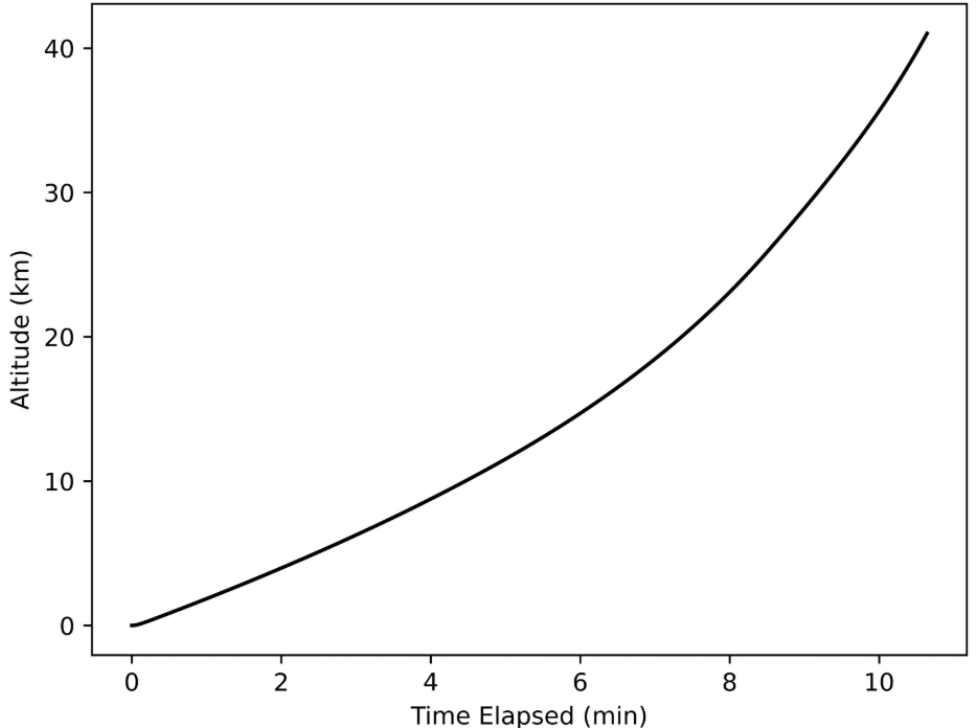

08 / Atmospheric flight modeling / Completed modeling study
AE311 · Technical lead · Three-person team
Modeling weather-balloon ascent and comparing hydrogen versus helium
As technical lead, I developed and documented a Python ascent model that coupled atmospheric conditions, gas expansion, envelope stress, and balloon motion. Our team swept gas mass to compare hydrogen and helium for a 3 kg payload and 35 km altitude requirement, concluding that hydrogen met the modeled objective at a lower gas cost.
- My contribution
- Technical lead: mathematical model, Python simulation, plots, and solution documentation
- Tools
- Python · Numerical integration · Buoyancy · Trade studies
- Outcome
- Report recommendation: 0.43 kg hydrogen as the lower gas-cost option

Turn a mission into model requirements
The study compared hydrogen and helium for a balloon carrying a 3 kg payload to at least 35 km before burst. The gas species and initial quantity were decision variables; the envelope was modeled as a spherical natural-latex shell.
As technical lead, I helped simplify the physical problem, developed and documented the solution, simulated it in Python, and produced plots. The three-person team connected the technical analysis to a gas-cost comparison.
Couple the physics, then sweep the design variable
The model combined a layered atmosphere, ideal-gas behavior, envelope stress and expansion, buoyancy, gravity, drag, and a material-failure criterion. Euler integration advanced the balloon’s state through the ascent.
A gas-mass sweep in 0.01 kg increments generated trial results for the two gases. NumPy, Matplotlib, pandas, and CSV output supported calculation, plotting, and comparison.
Reported result & recommendation
The report selected 0.43 kg of hydrogen rather than 0.95 kg of helium to meet the modeled altitude objective at lower gas cost.
The first successful mass-sweep cases reported 43.12 km for hydrogen and 39.14 km for helium, both above the 35 km requirement. Using the report’s gas-price assumptions, the corresponding gas costs were $2.07 and $90.36. These are the submitted study’s simulation results and historical cost estimates.
The recommendation addressed gas cost under the academic model. It did not compare complete launch costs or establish a flight-tested operating configuration. The model assumed a spherical envelope and constant drag coefficient, omitted wind and payload drag, and simplified material failure; the original calculations have not been rerun for this portfolio.